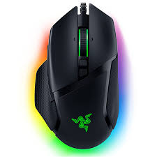
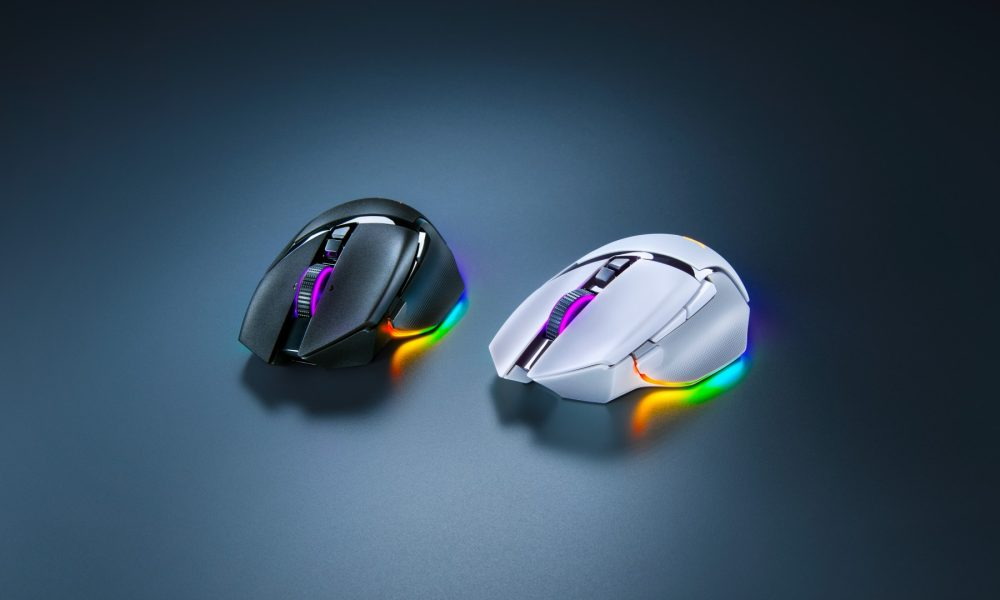

Mejor Calidad/Precio
Reseña: Mouse Precision V3 RGB
Puntaje Final:8.8/10
¿Puede un mouse económico competir con los grandes? Analizamos el sensor y los switches del Precision V3 para descubrir si es una joya oculta.
Puntos Fuertes:
- Sensor impecable: Sin aceleración ni saltos en movimientos rápidos.
- Forma ergonómica que reduce la fatiga en sesiones largas.
- Peso equilibrado, ideal para tracking preciso.
Debilidades:
- El software de configuración es algo anticuado.
- Los clicks laterales se sienten un poco esponjosos.
¿Buscas precisión profesional?
Consigue el Precision V3 RGB y domina tus partidas hoy mismo.
Especificaciones Técnicas
| Sensor | PixArt PMW3389 (Ãptico) |
|---|---|
| DPI Máximo | 16,000 DPI |
| IPS / Aceleración | 400 IPS / 50G |
| Peso | 85 gramos |
| Switches | Omron (20 Millones) |
Análisis Detallado
El Mouse Precision V3 RGB se posiciona como una de las mejores opciones para jugadores que buscan rendimiento profesional sin pagar el "impuesto de marca" de los fabricantes más grandes. El uso del sensor PMW3389 garantiza una respuesta 1:1 sin suavizado artificial ni predicción de movimiento.
Rendimiento en Juegos: Probamos el mouse en títulos como Valorant y Counter-Strike 2. La precisión en micro-ajustes es excepcional. Su peso de 85g se siente robusto pero ágil, permitiendo frenadas en seco precisas después de flicks rápidos.
Calidad de Construcción: El plástico tiene un recubrimiento mate que ayuda con el agarre, incluso en manos sudorosas. El cable es de tipo paracord, lo que minimiza el arrastre y casi da la sensación de un mouse inalámbrico si se usa con un bungee.